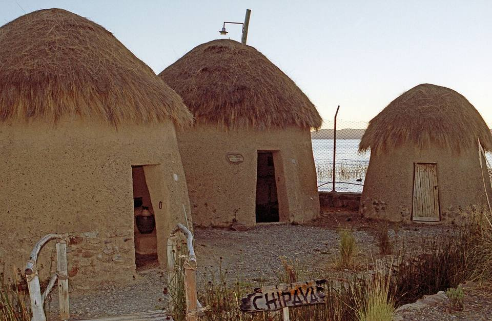
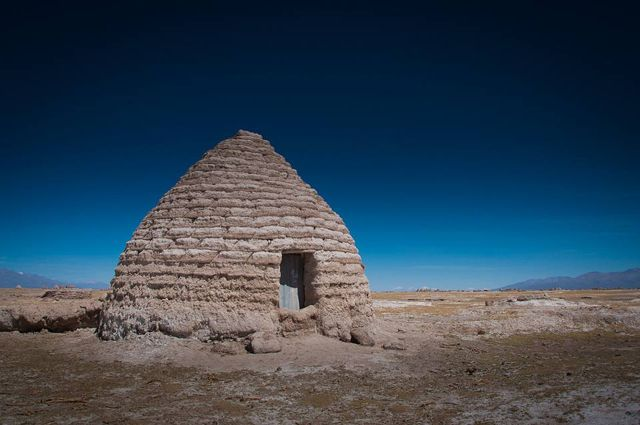
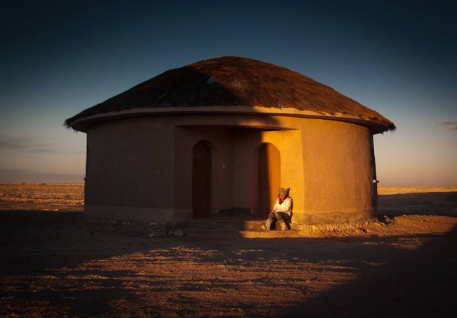
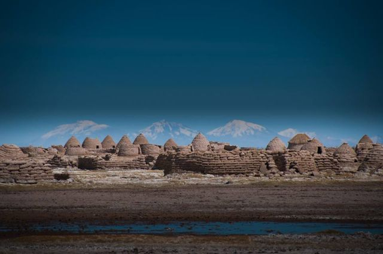
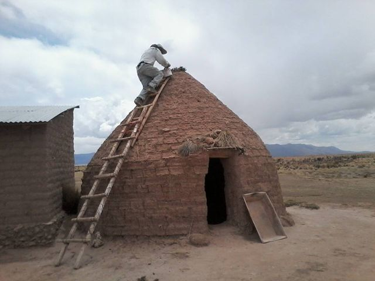
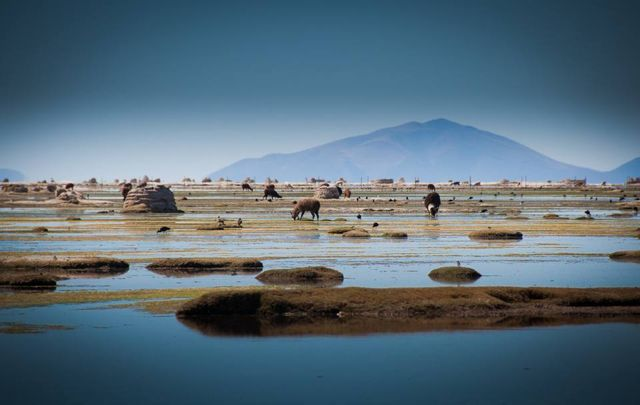

Chipaya
Departamento de Oruro · Cultura e historia

A orillas del Salar de Coipasa, Chipaya es el pueblo de los uru-chipaya, uno de los pueblos más antiguos de los Andes, que conserva su idioma, su vestimenta y su organización. Sus casas redondas de champas de tierra con techo de paja son únicas en Bolivia. Es un lugar aparte, para visitar con respeto y sin apuro, y entender cómo se vive en uno de los ambientes más duros del continente.
3650 maltura
1 díapara quedarse
Gran altura. Por encima de 3500 m, el mal de altura (soroche) es frecuente. Llega de a poco, toma mucha agua y ve despacio el primer día.
Qué hacer
- Casas redondas tradicionales (wayllichas)
- Encuentro con la comunidad, con un guía local
- Dunas y el río Lauca
- El Salar de Coipasa, muy cerca
Qué comer
- Quinua realLa mejor quinua del mundo crece alrededor del Salar: en sopa, en tortillas o de acompañamiento.
- Carne de llamaCarne magra y sabrosa, a menudo a la parrilla o como charque. Muy común en Uyuni y el Altiplano.
- Sopa de quinuaSopa caliente de quinua y verduras, servida en refugios y comedores de altura. Perfecta cuando hace frío.
Consejo. Acceso largo y poco transporte desde Oruro (3 a 4 h). La comunidad cobra una entrada. Pide siempre permiso antes de fotografiar a alguien.
Cómo llegar a Chipaya
Salar de Coipasa Tour en 4x4 o excursión · cerca de 1 h
4x4 con chofer o guía local.
Oruro Carretera (bus, auto) · 3 a 4 h
Transporte desde el mercado Avaroa de Oruro, pocas salidas: confirma el día anterior.
Se suele llegar tarde: prevé el alojamiento.
Fotos de Chipaya










Otros lugares de la región
 Parque Nacional SajamaLa cumbre más alta de Bolivia (6542 m), géiseres, aguas termales y llamas.
Parque Nacional SajamaLa cumbre más alta de Bolivia (6542 m), géiseres, aguas termales y llamas. Curahuara de CarangasLa «Capilla Sixtina del Altiplano»: un templo de adobe cubierto de pinturas murales.
Curahuara de CarangasLa «Capilla Sixtina del Altiplano»: un templo de adobe cubierto de pinturas murales. OruroCiudad minera del Altiplano, famosa por su Carnaval, Patrimonio de la UNESCO. Punto de partida del tren a Uyuni.
OruroCiudad minera del Altiplano, famosa por su Carnaval, Patrimonio de la UNESCO. Punto de partida del tren a Uyuni. Aguas termales de Obrajes y CapachosPiscinas de agua caliente natural en el Altiplano, a menos de una hora de Oruro.
Aguas termales de Obrajes y CapachosPiscinas de agua caliente natural en el Altiplano, a menos de una hora de Oruro. Museo Ferroviario de MachacamarcaViejas locomotoras a vapor e historia del tren minero, al sur de Oruro.
Museo Ferroviario de MachacamarcaViejas locomotoras a vapor e historia del tren minero, al sur de Oruro. Lagos Uru Uru y PoopóLagos poco profundos del Altiplano, a las puertas de Oruro, donde llegan los flamencos.
Lagos Uru Uru y PoopóLagos poco profundos del Altiplano, a las puertas de Oruro, donde llegan los flamencos. Salar de CoipasaEl segundo salar más grande de Bolivia, salvaje y casi sin visitantes.
Salar de CoipasaEl segundo salar más grande de Bolivia, salvaje y casi sin visitantes. UyuniPueblo base de los tours al Salar, con un cementerio de trenes a la salida.
UyuniPueblo base de los tours al Salar, con un cementerio de trenes a la salida. Salar de Uyuni + Sud Lípez (tour)El salar más grande del mundo y luego las lagunas de colores del Sud Lípez. Lo mejor de muchos viajes.
Salar de Uyuni + Sud Lípez (tour)El salar más grande del mundo y luego las lagunas de colores del Sud Lípez. Lo mejor de muchos viajes. TupizaPaisajes de western: cañones rojos, cactus y la última huida de Butch Cassidy.
TupizaPaisajes de western: cañones rojos, cactus y la última huida de Butch Cassidy.- CotagaitaPueblo verde de un valle frutícola, en el camino de Potosí a Villazón.
 VillazónLa frontera con Argentina, frente a La Quiaca: el paso más usado por los viajeros.
VillazónLa frontera con Argentina, frente a La Quiaca: el paso más usado por los viajeros.